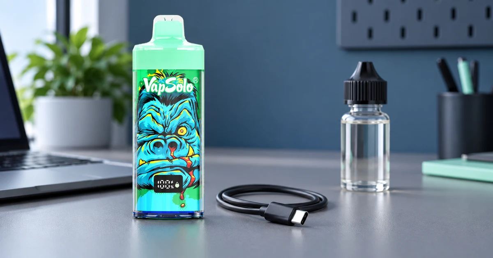

Cigarrillo electrónico recargable y rellenable: diferencias
“Recargable” y “rellenable” describen funciones diferentes. Que un cigarrillo electrónico tenga batería recargable no significa que pueda abrirse para añadir líquido vaper, ni que use un pod sustituible.

Recargable: habla de la batería
Un dispositivo recargable permite cargar su batería siguiendo las instrucciones del fabricante, normalmente mediante un puerto indicado en la ficha. VapSolo King Pro 65K publica batería de 850 mAh y carga USB-C; ese dato se refiere a la alimentación eléctrica, no autoriza a rellenar el equipo.
Rellenable: habla del depósito de líquido
Un dispositivo rellenable está diseñado para admitir e-líquido mediante un procedimiento concreto. Si el fabricante no lo indica expresamente, no debe asumirse que se puede abrir o rellenar. Forzar un formato no concebido para ello puede afectar a su uso y a su seguridad.
| Término | Qué describe | Qué no implica |
|---|---|---|
| Recargable | La batería puede cargarse | Que se añada líquido |
| Pod sustituible | Un cartucho reemplazable | Que sea rellenable |
| Rellenable | Admite líquido según instrucciones | Que toda batería sea recargable |
Checklist antes de usar líquido vaper
Lee la documentación del formato exacto
- Localiza la indicación expresa de “rellenable” en la documentación.
- Comprueba el método y la compatibilidad indicados por el fabricante.
- No rellenes un dispositivo solo porque tenga puerto de carga.
Conclusión
La batería recargable y la posibilidad de añadir líquido son características independientes. Para conocer qué significa e-líquido y cómo se etiqueta, continúa con la guía de líquido vaper y electronic liquid .